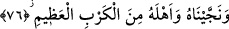
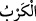
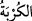
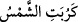
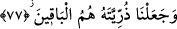

Teâlâ’nın azamet ve kibriyasını gösteren bir delildir.
76. Kendisini ve ailesini büyük felâketten kurtardık.
“Kendisini ve ailesini büyük felâketten” yani boğulmaktan yahut asırlar boyu
kavminin eziyetinden “kurtardık.”
“
” şiddetli gam ve tasadır. “
” kelimesi “
” gibidir. Bu kelimenin aslı yeri
kazıp hafriyat yaparak alt-üst etmektir. İşte hafriyat ve kazıyla yerin alt-üst olup
savrulması gibi gam ve tasa da insanı savurur, toz duman eder. Bu “
” kelimesinin
güneşin batmaya yaklaştığı anı ifade etmek için kullanılan “
” sözünden gelmiş
olması da mümkündür.
77. Biz yalnız Nuh’un soyunu kalıcı kıldık.
“Biz yalnız Nuh’un soyunu kalıcı kıldık.” Çünkü Nuh (a.s.)’ın «Rabbim! dedi,
yeryüzünde kâfirlerden hiç kimseyi bırakma!» (Nuh 71/26) şeklindeki bedduası
gereği kâfirleri helak ettik. Rivâyete göre tufanda zaten gemiye binmeyenlerin tamamı
boğulmuştu. Binenlerden de daha sonra Nuh (a.s.)’ın oğulları ve onların eşlerinden
başka herkes öldü. Artık kıyamete kadar insan neslinin devamı için yalnız bunlar sağ
kaldılar. Katâde der ki, bütün insanlar Nuh (a.s.)’ın zürriyetindendir. Nuh (a.s.)’ın
gemiye binip sağ kurtulan üç oğlu vardı. Bunlar; Sâm, Hâm, Yâfes’tir. Buna göre Sâm
Arapların, Farsların, Rumların, Yahudilerin, Hıristiyanların babası ve büyük dedesidir.
Hâm, Sudanlıların, Doğu ve Batı Pakistanlıların, Hindistanlıların yine Sudanlı başka
bir kavmin, Zencilerin, Habeşistanlıların, Kıptîlerin, Berberîlerin ve daha diğer bazı
millet ve kavimlerin babası ve büyük dedesidir. Yâfes ise Türklerin, Hazarlıların,
(Türkmen, Kazak, Özbek, Tatar ve Azerilerin) Ye’cûc ve Me’cûc’ün ve o bölgedeki
diğer bazı millet ve kavimlerin babası ve büyük dedesidir.
Keşfü’l-esrar’da der ki: Tarihçiler demiştir ki: Yâfes’in yedi çocuğu vardı. Onların
isimleri Türk, Hazar, Saklâb, Taris, Mensek, Kümârî, Sıyn. Onların yerleştikleri yer
doğu ile kuzey rüzgarının estiği yönün ortasında idi. Bütün insanlar bu yedi kardeşin
çocuklarıdır. Aynı şekilde Nuh’un oğlu Hâm’ın da yedi çocuğu vardı. Onların isimleri,
Sind, Hind, Zenc, Kıbt, Habeş, Nûbe ve Ken’an idi. Onların yerleştikleri yer güney ile
batıdan esen rüzgar (debûr) ve sabâ rüzgarının estiği yönün arasında idi. Siyahilerin
hepsi bu yedi kardeşin çocuklarıdır. Sâm’ın beş çocuğu olduğu söylenir. Bazıları ise